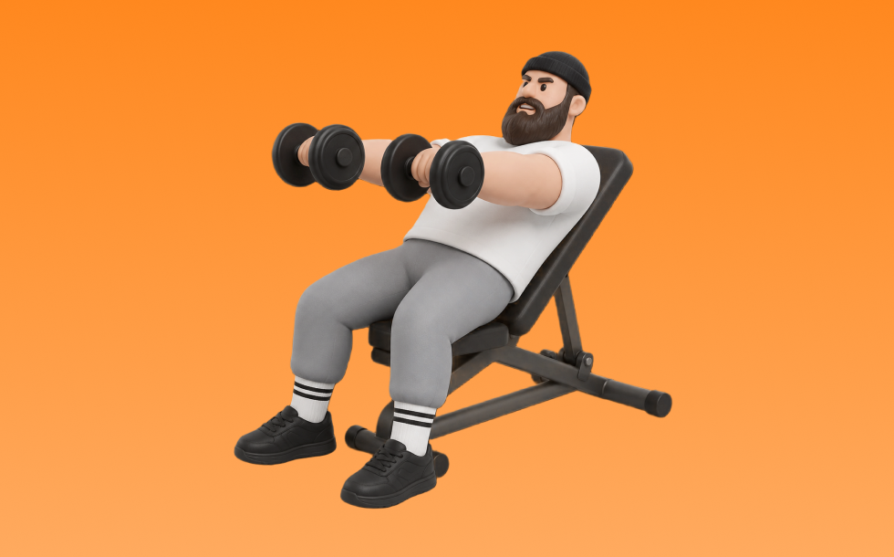

インクラインフロントレイズ

インクラインフロントレイズとは、ダンベルとインクラインベンチを使って「腕を前に上げる」動作で肩前部（三角筋前部）を鍛える種目です。可動域を確保しやすく、反動を使いにくいのが特徴で、肘を軽く曲げたまま肩の高さまで持ち上げ、ゆっくり下ろす動作を繰り返します。肩前部の筋力・筋量アップが期待できます。
- 対象部位
- 肩
- 器具
- ダンベル
- 記録形式
- 重量・回数
- 別名
- インクラインフロント / incline front raise
YouTube動画
-
【筋トレ初心者向け】インクラインフロントレイズ フォーム解説
-
【肩トレ】フロントレイズを誰でも簡単に効かせるコツを教えます！
-
【三角筋前部】フロントレイズ(ダンベル)の正しいやり方 | 『怪我をしにくいダンベルの向き』など初心者向けの解説！
-
【肩トレ】肩だけに効かせるやり方を全てまとめた筋トレ動画
-
【必要? 不要?】三角筋を鍛えるフロントレイズの適切なフォームと注意点
-
【筋トレ悪いフォーム解説】三角筋前部狙いなら、フロントレイズはこう鍛える！
-
【インクラインフロントレイズ】初心者でも効かせるコツ〜角度・重量までプロが解説
-
【フロントレイズ】肩に効かせるコツをダンベル・バーベル・ケーブルなど器具別に！
-
【肩トレ】ダンベルでハリのある肩を作る！最も効果的な筋トレメニュー5選|サイド・フロント・リア
-
一番効果があった肩トレを教えます
-
肩全体に効きまくる！7分間ダンベルトレーニング
-
サイドレイズ正しいやり方とNGフォーム！プロビルダーが教える確実に効く2種目！
-
インクラインフロントレイズ 解説！
-
【3分解説】解剖学的ダンベルフロントレイズ【肩筋トレ】
-
【肩トレ】軽いダンベルだけで肩に効く！初心者にもオススメの基本３種目を解説【筋トレ】
-
ダンベルだけで“肩が変わる”！初心者・宅トレ向けの基本4種目を紹介
YouTubeショート
-
めっちゃ肩がデカくなった今やってるメニュー！#shorts
-
ダンベルのみで作る肩トレ教室#筋トレ #gimnastik
-
正しいダンベルフロントレイズのやり方
-
インクラインフロントレイズ 13.5kg
-
正しいショルダープレス4つのポイント #筋トレ
-
みなさんはインクラインサイドレイズやってますか？持田選手がしっかり三角筋の横に効くトレーニングをレクチャーしてくれました！#筋トレ #volix #肩トレ #ちょこっと惜しい #三角筋
-
正しいサイドレイズ4つのポイント #筋トレ
-
インクラインフロントレイズ ストレッチ 5kg
-
肩トレこの3種類で十分やと思うねんけど、マッチョ警察の方々どう思う？
-
インクラインフロントレイズ 30ポンド
-
フロントレイズの基本動作 #shorts #持田式 #筋トレ
-
インクラインダンベルフロントレイズ
-
先生!肩をデカくするおすすめの筋トレメニューは？ ＃Shorts #肩トレ
-
今日の肩トレ！#筋トレ大学生 #筋トレ男子 #gymmotivation #fitnessmotivation
-
意味のないトレーニング４選！【筋トレ】
-
肩の筋肉はこれやっとけばデカくなる。#shorts
-
【車庫ジム】インクラインダンベル・フロントレイズ 三角筋前面にしっかり効かす！
-
【フロントレイズ】やり方とコツを紹介❗️#フロントレイズ #肩トレ #三角筋前部 #筋トレ #自宅トレ #ボディメイク #フィジーク #スポーツモデル #肩メロン
-
絶対にデカくなるサイドレイズやり方#筋トレ #肩トレ #筋トレ初心者 #shoulderworkout
-
マシンを使ったショルダープレスのコツ
-
【ダンベル】肩トレ3選 #筋トレ
-
インクラインフロントレイズ 収縮 5kg
-
胸トレのやり方🔥〜ダンベルプレス基礎編〜 #筋トレ #筋肉 #筋肉社長 #胸トレ
-
【初心者必見】世界一わかりやすいサイドレイズ#プロテイン #筋肉 #筋トレ初心者 #筋トレ #fitness #肩トレ #サイドレイズ
-
インクラインフロントレイズ 11kg×2
-
【筋トレ】肩フロントレイズコツ#shorts
-
こんなサイドレイズ今すぐやめて #short #youtubeshorts #プロテイン #筋肉博士 #筋トレ大学 #山本義徳 #サイドレイズ #肩トレ
動作方法
- 対象部位の力を抜かずに構える
- 反動を使わず、可動域を丁寧に使う
- 戻し動作をゆっくり行う
動作ポイント
- 可動域を急に狭めない
- 対象部位の緊張を保つ
ワンポイントアドバイス
- 重量よりも肩の軌道を安定させる
- 首まわりの力みを減らして行う
目的別回数設定
目的や体力に応じた一般的な目安です。無理のない範囲で調整してください。
- 筋力アップ
- 1〜5回
- 筋肥大
- 6〜12回
- 持久力アップ
- 13〜20回
YouTube動画について
動画はYouTubeの公開情報をもとに表示しています。内容は投稿者によるもので、Biggrによる監修ではありません。
アプリを入手
筋トレやトレーニングの記録はBiggrにお任せください。今すぐ無料で使い始められます。